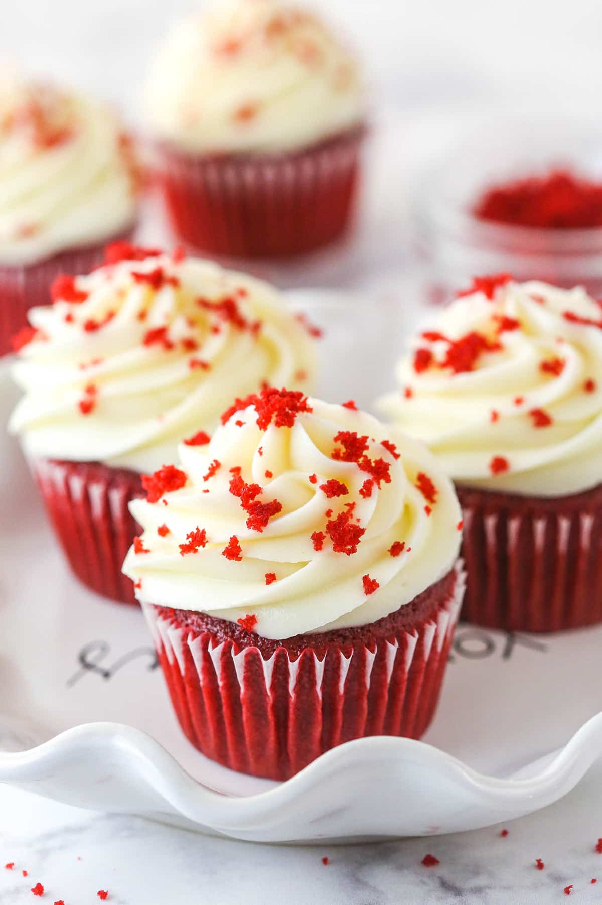

Smore's - a graham cracker cake filled with a whipped milk chocolate ganache and topped with toasted marshmallow fluff.
Red Velvet -three moist layers of stunning red velvet filled and topped with silky cream cheese icing and finished with melt-in-your-mouth white chocolate shavings and drizzle.
Salted Caramel - three layers of fluffy yellow butter cake with layers of creamy caramel buttercream and salted caramel topped with dripping caramel.
Blueberry Cheesecake - a silky-smooth dessert that sits atop a crunchy graham cracker crust and right before serving, smothered with an elegant blueberry sauce.
Biscoff - soft vanilla cupcake topped and filled with a beautifully light Biscoff buttercream, this recipe is one you will want to crave.
Cookies n' Cream - a moist chocolate cupcake swirled with cookies and cream buttercream frosting, drizzled with chocolate ganache, and crowned with mini oreo cookies.

Red Velvet - eye-catching cupcake version of the iconic Red Velvet Cake tastes like a cross between vanilla and chocolate cupcakes, piled high with swirls of fluffy cream cheese frosting.
Mango Graham - this cupcake was inspired by a popular dessert in the Philippines called Mango Float.